如何製作兒童繪本故事網頁
本教學將帶您一步步學習如何使用AI工具創建兒童繪本故事，並將其製作成互動式網頁。
教學概述
在這個教學中，我們將學習如何使用以下工具來創建一個完整的兒童繪本故事網頁：
- 使用ChatGPT生成故事內容
- 使用Leonardo AI生成故事插圖
- 使用Visual Studio Code將故事和圖片整合成網頁
在開始之前，請確保您已經：
- 註冊ChatGPT帳號
- 註冊Leonardo AI帳號
- 安裝Visual Studio Code
- 在桌面創建一個名為「story」的文件夾
第一部分：使用ChatGPT生成故事
登入ChatGPT，在對話框中輸入以下提示：
（在空白處填入您想要的主角名稱）
等待ChatGPT生成10幕故事大綱後，您可以進行微調，確保故事適合兒童閱讀。
將故事翻譯成英文（這將幫助生成更好的圖片）。在對話框中輸入：
等待ChatGPT完成翻譯，然後保存這個英文版本，我們將用它來生成圖片。
第二部分：使用Leonardo AI生成插圖
登入Leonardo AI，點擊「Library」找到上次生成的圖，上方有+號按下去。
從主角名字後面開始複製文字到最後，打開word貼上，如下圖所示：
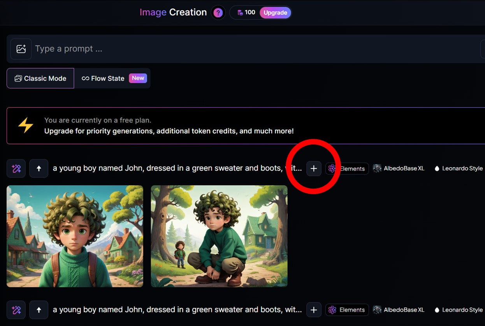 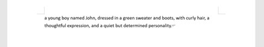回到ChatGPT，複製場景1的內容貼到Word，接在前面那段話後面，如下圖所示：
接著複製整段話貼到Leonardo AI：
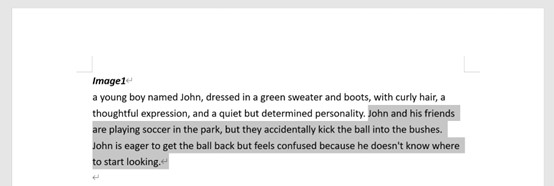接著到Leonard去生成圖片，並下載，改檔名為image1，再貼到Word：
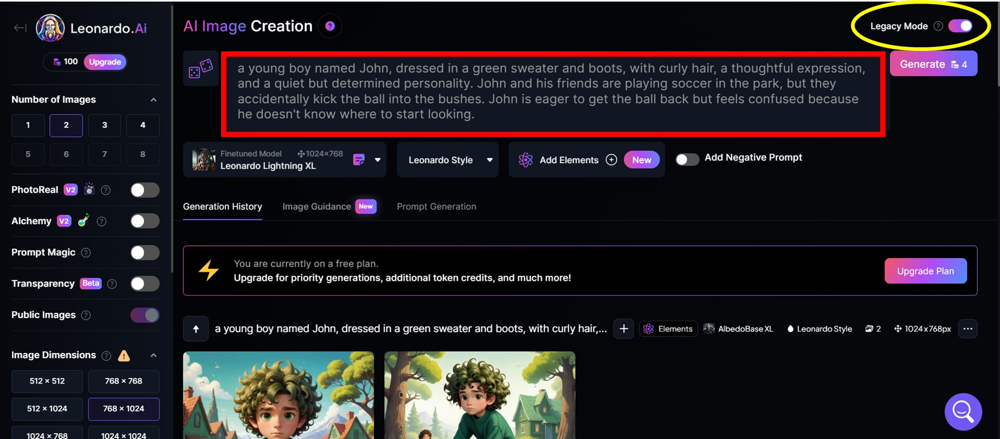 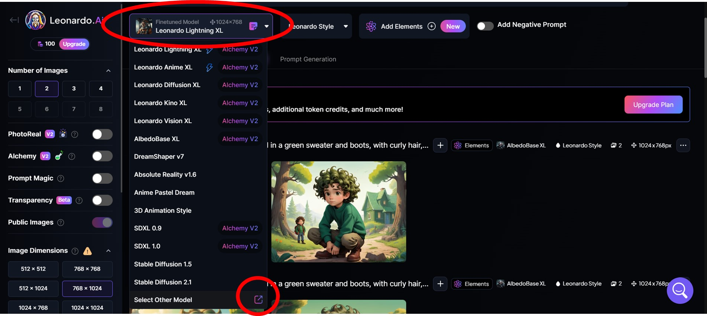 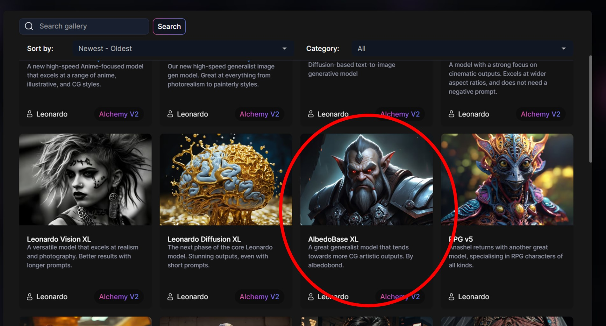 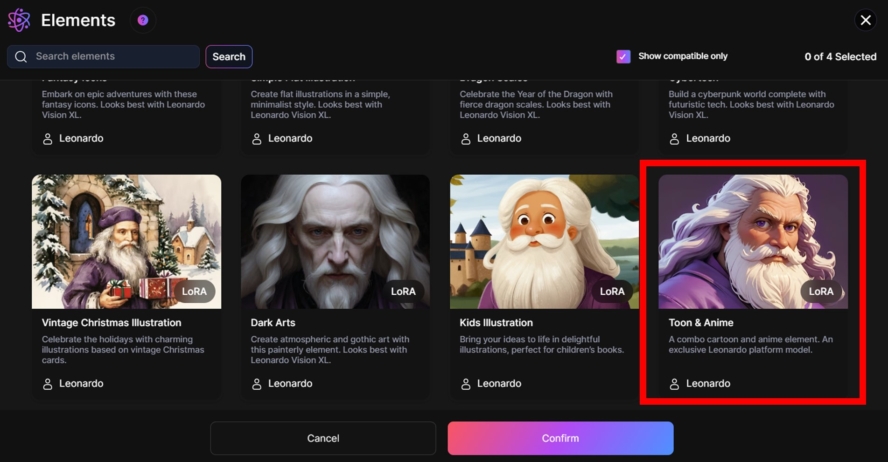 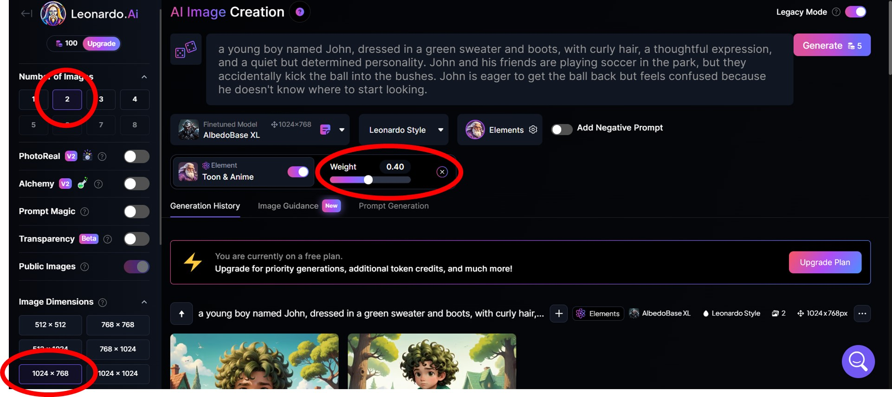 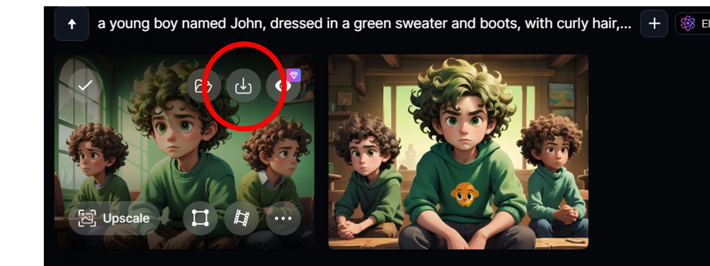圖片貼到Word後的效果：
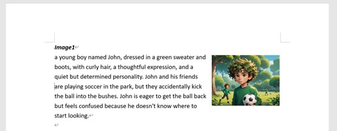重複以上步驟直到image10，並儲存Word檔案。確保所有圖片都已重命名為image1、image2...一直到image10。
第三部分：創建網頁
在ChatGPT輸入以下提示，生成網頁代碼：
到Windows桌面新增資料夾，命名為「story」，把先前製作好的image1到10都拉進資料夾裡。
打開桌面的Visual Studio Code，點擊左上角的「File」，選擇「Open Folder」開啟資料夾，選取story資料夾，點選加號新增檔案，命名為「story.html」：
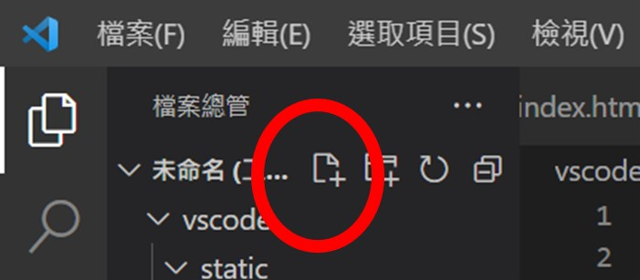回到ChatGPT，將生成的HTML代碼複製到Visual Studio Code，再次點擊「File」，選擇「Save」保存檔案。
點開桌面的story資料夾，確認是否有HTML連結，並點開查看，你就會看到你生成的繪本故事網頁！
您可以隨時編輯HTML檔案，更新故事內容或調整設計。只需在VS Code中打開檔案，進行修改，然後保存即可。
恭喜完成！
您已成功創建了一個互動式兒童繪本故事網頁！您可以將這個網頁分享給孩子們，或者用它來教學。
如果您想進一步增強您的網頁，可以考慮以下改進：
- 添加背景音樂
- 添加翻頁音效
- 添加角色動畫
- 創建多個故事並添加故事選擇頁面